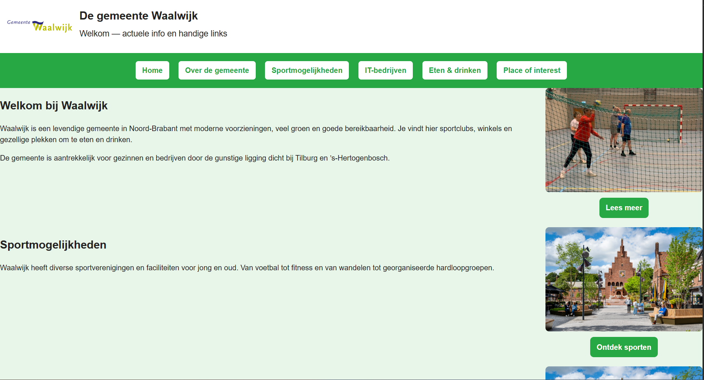
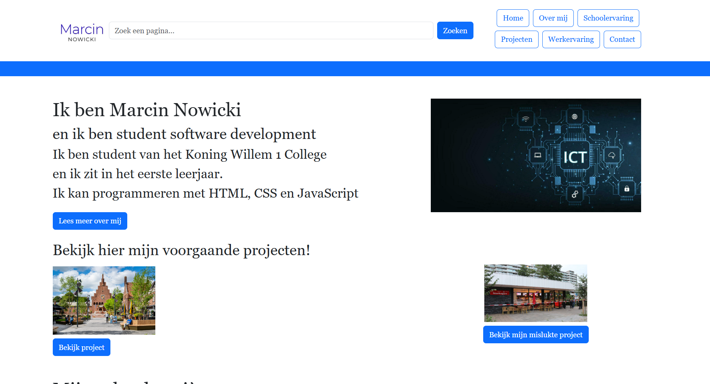

Nu werk ik aan een nieuwe website namelijk mijn portfoilio. Ik werk daar voornamelijk met html, bootstrap en javascript. Met html was het voornamelijk herhaling met wat ik de vorige periode af heb. Deze periode heb ik ook een nieuwe programeertaal geleerd namelijk bootstrap. Bootstrap is eigenlijk een CSS in html. Ik heb met Bootstrap geleerd hoe je afbeeldingen kan verplaatsen, hoe je afbeeldingen groter kan maken, hoe je buttons kan maken en hoe je een kleurbanner kan maken. En met Javascript heb ik geleerd hoe ik een zoekbalk en contactforumlier kan maken.
